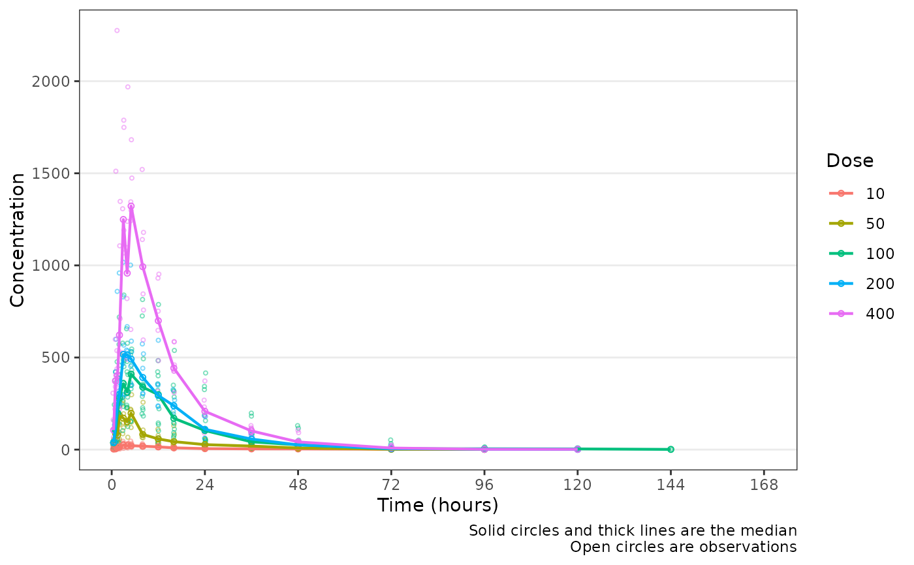

Plot a dependent variable versus time
Usage
plot_dvtime(
data,
dv_var = "DV",
time_vars = c(TIME = "TIME", NTIME = "NTIME"),
timeu = "hours",
col_var = NULL,
grp_var = "ID",
dose_var = "DOSE",
loq = NULL,
loq_method = 0,
cent = "mean",
obs_dv = TRUE,
grp_dv = FALSE,
dosenorm = FALSE,
cfb = FALSE,
ylab = "Concentration",
log_y = FALSE,
show_caption = TRUE,
n_breaks = 8,
barwidth = NULL
)Arguments
- data
Input dataset. Must contain the variables:
"ID","DV""MDV".- dv_var
Character name of the DV variable in
data.- time_vars
Names of actual and nominal time variables. Must be named character vector. Defaults is: c(
TIME="TIME",NTIME="NTIME").- timeu
Character string specifying units for the time variable. Passed to
breaks_timeand assigned to default x-axis label. Options include:"hours" (default)
"days"
"weeks"
"months"
- col_var
Character string of the name of the variable to map to the color aesthetic.
- grp_var
Character string of the variable to map to the group aesthetic. Default is
"ID"- dose_var
Character string of the variable to use in dosenormalization when
dosenorm= TRUE. Default is"DOSE".- loq
Numeric value of the lower limit of quantification (LLOQ) for the assay. Must be coercible to a numeric if specified. Can be
NULLif variableLLOQis present indataSpecifying this argument implies thatDVis missing indatawhere < LLOQ.- loq_method
Method for handling data below the lower limit of quantification (BLQ) in the plot.
Options are:
+ `0` : No handling. Plot input dataset `DV` vs `TIME` as is. (default) + `1` : Impute all BLQ data at `TIME` <= 0 to 0 and all BLQ data at `TIME` > 0 to 1/2 x `loq`. Useful for plotting concentration-time data with some data BLQ on the linear scale + `2` : Impute all BLQ data at `TIME` <= 0 to 1/2 x `loq` and all BLQ data at `TIME` > 0 to 1/2 x `loq`. Useful for plotting concentration-time data with some data BLQ on the log scale where 0 cannot be displayed- cent
Character string specifying the central tendency measure to plot.
Options are:
Mean only:
"mean"(default)Mean +/- Standard Deviation (upper and lower error bar):
"mean_sdl"Mean + Standard Deviation (upper error bar only):
"mean_sdl_upper"Median only:
"median"Median +/- Interquartile Range:
median_iqrNone:
"none"
- obs_dv
Logical indicating if observed data points should be shown. Default is
TRUE.- grp_dv
Logical indicating if observed data points should be connected within a group (i.e., spaghetti plot). Default is
FALSE.- dosenorm
logical indicating if observed data points should be dose normalized. Default is
FALSE, Requires variable specified indose_varto be present indata- cfb
Logical indicating if dependent variable is a change from baseline. Plots a reference line at y = 0. Default is
FALSE.- ylab
Character string specifing the y-axis label: Default is
"Concentration".- log_y
Logical indicator for log10 transformation of the y-axis.
- show_caption
Logical indicating if a caption should be show describing the data plotted
- n_breaks
Number of breaks requested for x-axis. Default is 5.
- barwidth
Numeric value passed to
widthingeom_errorbar. Default is 2.5% of maximumNTIME
Examples
data <- dplyr::mutate(data_sad, Dose = factor(DOSE))
plot_dvtime(data, dv_var = "ODV", cent = "median", col_var = "Dose")
#> Warning: Removed 205 rows containing non-finite outside the scale range
#> (`stat_summary()`).
#> Warning: Removed 205 rows containing non-finite outside the scale range
#> (`stat_summary()`).
#> Warning: Removed 205 rows containing missing values or values outside the scale range
#> (`geom_point()`).
